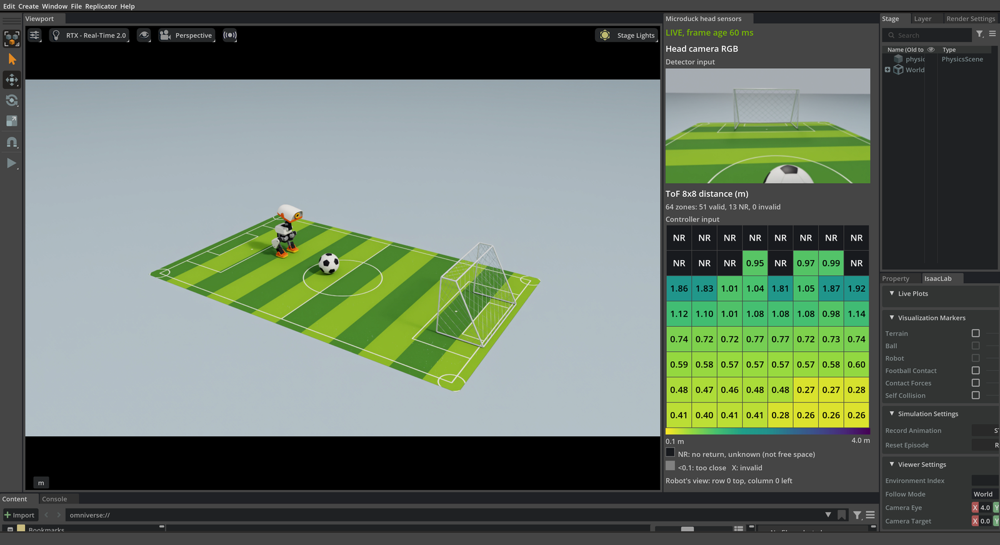

4.3 射门！#
把 4.2 节 的控制设计放进球场，观察感知、阶段切换与底层技能怎样协同完成射门，再用每轮记录检查失败发生在哪一环。
射门！#
先按 1.2 节 准备好课程容器，再回到容器终端；容器已在运行时，可以在宿主机用 docker exec -it microduck-workshop bash 进入。然后运行：
python3 scripts/run.py football --output outputs/onboard-football
参数详解
--output：一个新目录；各轮记录分别保存在episode-001、episode-002等子目录
机器人会自动观察、接近足球并尝试射门。第一轮从名义起点出发。点击 Isaac Sim 窗口，按 R 就能重新开始：窗口保持打开，每轮都从站立初始化开始，起点随机偏移，前后、左右各最多 5 厘米，朝向顺时针或逆时针最多偏转 15°；足球和球门的位置不变。场景重新初始化时稍等片刻，随后任务会自动开始。
学生实验不设总时限，进球、未进球或暂时无法出脚时都不会自动暂停仿真。传感器持续刷新；按 R 才会重置当前尝试。关闭 Isaac 应用，或在启动它的终端按 Ctrl+C，即可停止程序。感知、对准或交接失败只会暂停当前动作，并尝试重新观察。
仿真要同时渲染第三人称视口、头部 RGB 相机和 ToF 等多路画面，运行速度取决于硬件性能，窗口里的动作看起来可能卡顿；任务按仿真时间推进。


左侧观察机器人，右侧对照它此刻看到的图像与距离：识别框是否稳定地框住球和球门，脚前的 ToF 读数是否随接近而变小。NR 表示没有回波，不能据此认为前方没有障碍。
summary.json 汇总已保存的各轮记录；单轮 manifest.json 的 navigation_retries 记录中途重新观察的原因。识别框仍在，并不表示几何位置已经通过检查；近距位置不够新鲜时，策略会停步重新观察。也要检查接近时的左右偏差和朝向、出脚条件是否满足，以及触球后是否恢复平衡。
按 R 重置时，程序先保存当前记录，再开始下一轮。
板载策略的控制周期#
控制周期
板载策略：RGB 与 ToF 按名义 15 Hz 采集，随后进行 YOLO 推理和位置估计。每 20 ms，反馈控制结合最近感知与新的身体反馈生成运动请求，底层 Actor 再生成关节目标。
这些频率是仿真配置，不是实测运行速度。计算期间仿真暂停；主机推理耗时与仿真时间分开计量，不相加。
人工设计的边界#
实验中，PD 航向反馈、横向纠偏和已训练的技能共同完成动作；阶段逻辑决定何时接近、停步与出脚。这些分工便于分析和调试。换成“把球带到中圈停下”或“走到球旁但不要碰球”，感知与反馈控制仍可复用，但目标位置、技能组合、切换条件和参数需要重新设计与验证。
如果模型推理可以离开机器人，放到 GPU 工作站上，或以更多网络延迟为代价放到云端服务器上，就能使用大得多的 VLA：它从语言指令和示范中学习，而不是依靠手写的阶段，快速控制仍由已训练的运动技能负责。
检查理解
板载射门中，哪些部分是从数据中学到的，哪些是人编写或配置的？
查看解析
检测器、官方行走与踢球策略经过训练。几何计算、直线生成、速度反馈、减速和阶段逻辑是编写的。
检查理解
想让 Microduck 把球带到中圈停下，现有的板载策略能直接复用吗？
查看解析
感知、PD 航向反馈和部分运动技能可以复用，但目标站位、阶段顺序、切换条件和交接需要针对新任务设计与验证。
带着“能否从示范学习任务决策”这个问题，进入 5.1 节，认识视觉-语言-动作模型（VLA）与 GR00T。